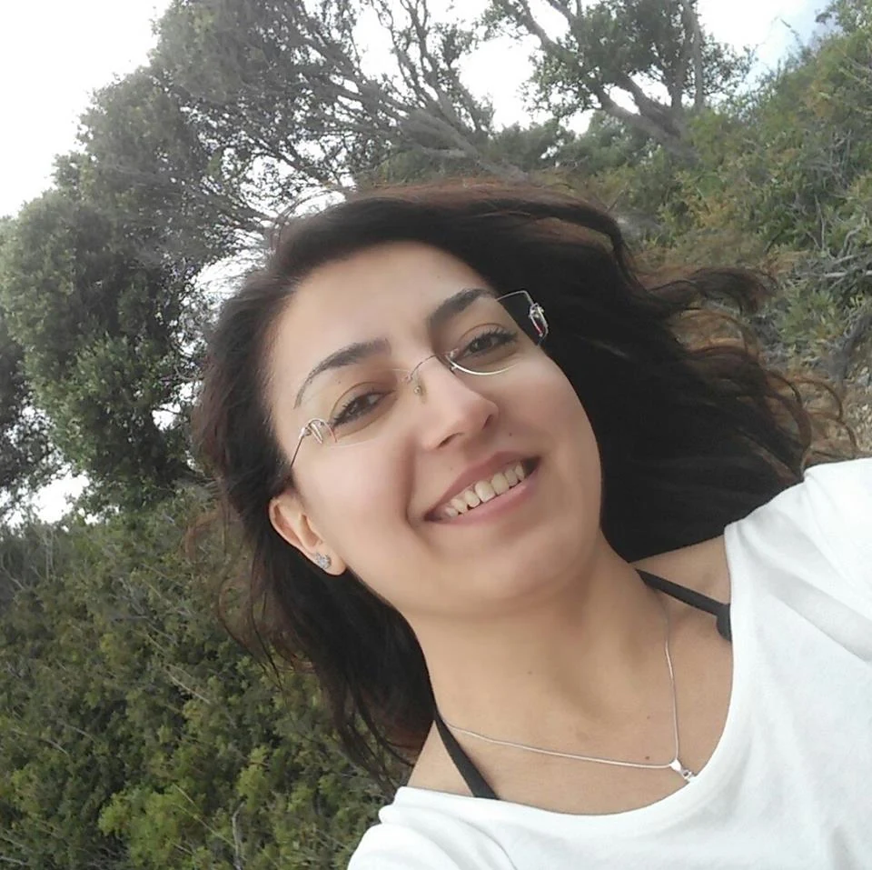
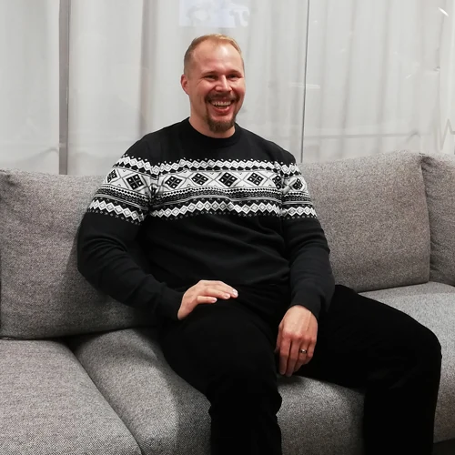
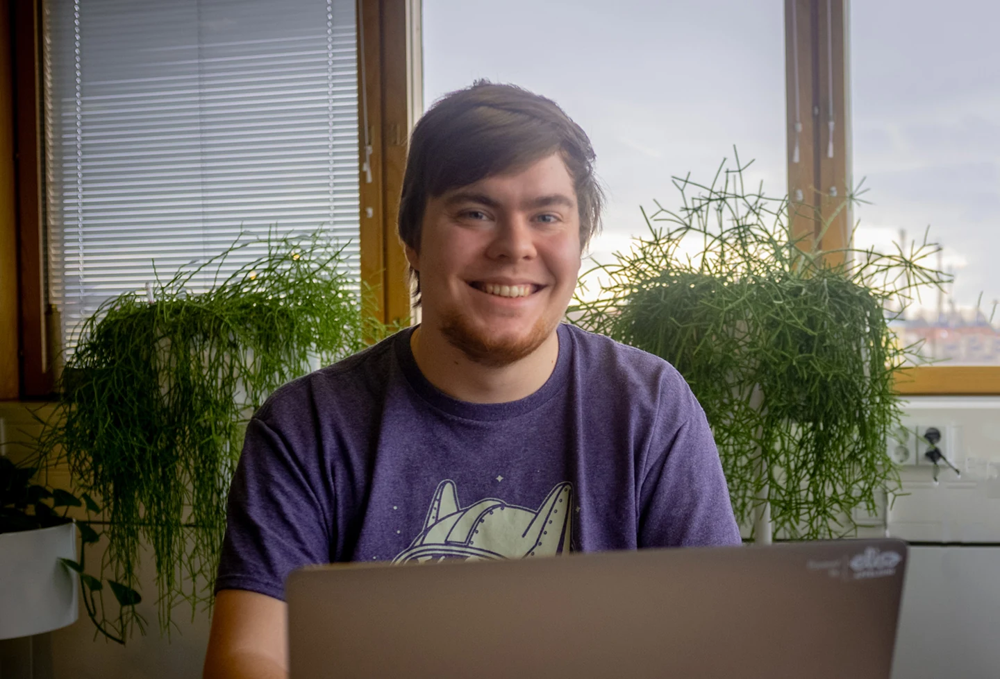

تتعاون الدورة مع شركات تقنية رائدة في فنلندا وخارجها.
Juha Tauriainen
مستشار أول
يتركّز دوري في Houston على تطوير الواجهات الأمامية. نستخدم طيفاً واسعاً من التقنيات والمكتبات، من بينها ما تُدرّسه هذه الدورة. وبصفتنا شركة استشارية، نساعد عملاءنا وشركاءنا على تحقيق نتائج أفضل عبر جودة أعلى. وإلى جانب الشيفرة، ننقل أفضل ممارسات المجال ونساعد عملاءنا على النجاح.
العمل في Houston رائع لأسباب عدة. أكثر ما أحبه أن الموظفين هم الأولوية دائماً؛ فأفكارهم واقتراحاتهم وآراؤهم تُسمع ويُستجاب لها. مثلاً، دعمتني Houston بالكامل عند إطلاق برنامج للإرشاد. نساعد أشخاصاً من مجالات مختلفة على تعلّم البرمجة، ونرشدهم إلى أفضل الممارسات ونساعدهم على دخول سوق العمل. وقد أفاد ذلك كلاً مني ومن Houston كثيراً. أشعر بمتعة كبيرة في مساعدة الآخرين، سواء كانوا عملاء أو زملاء عمل أو طلاباً.

Burcu Aybak
مهندسة برمجيات
أعمل في Unity مهندسة برمجيات متكاملة، ولديّ عشر سنوات من الخبرة في تطوير البرمجيات تشمل تطبيقات الويب وأنظمة القيادة والتحكم وأنظمة الاتصالات.
أحب هندسة البرمجيات لأنها مزيج من حل المشكلات الذكي والعمل الإبداعي. أحياناً أشعر وكأنني بطل خارق! وفي الوقت نفسه توجد دائماً أشياء ومواضيع جديدة تتعلّمها، وتُدفع لك مقابل ما تستمتع به مع أشخاص تحبهم؛ فالعمل في الهندسة ممتع! مجالنا وعملاؤنا ممتعون (ألعاب!)، ومن الرائع أن تعمل عملاً يساعد عملاءنا على كسب رزقهم من ما يحبونه.
أحب العمل في Unity لأنه يتيح لي العمل مع زملاء ممتازين وشخصيات متنوعة من جميع أنحاء العالم، وهم بارعون في عملهم أيضاً. إنه مكان مثالي لتعلّم تقنيات جديدة واستكشاف مجالات جديدة. Unity بالنسبة لي مكان عمل مثالي بطريقة يصعب وصفها في بضع جمل.

Tuukka Peuraniemi
مطوّر برمجيات ومتعدد المهارات الرقمية
لديّ سنوات طويلة من الخبرة في تقنيات الصحة. وقد صرت مطوّر برمجيات بعد عدة منعطفات؛ بدأت صيدلانياً، ثم حصلت على ماجستير في علوم الحاسوب، وعملت مدير تطوير ثم مطوّر برمجيات.
أستمتع بالعمل في Terveystalo لأن لك رأياً في التقنيات التي نستخدمها والمشاريع التي تريد المشاركة فيها. وبحكم دوري وخبرتي، أشارك في إطلاق خدمات جديدة وتطويرها. وأعمل الآن على تطبيق جوال جديد سيصل إلى العملاء في المستقبل القريب.
أريد في المستقبل أن أواصل التقدّم في عملي وأن أستمر في التعلّم، والعمل في مشاريع متعددة المورّدين مع زملاء ذوي خبرة.
Kristiina Rönnberg
مهندسة برمجيات
أعمل في Konecranes مطوّرة برمجيات. وأنا مهتمة بشكل خاص بتطوير الويب وواجهات المستخدم والخدمات السحابية.
أفضل ما في عملي أنني أستطيع حل مشكلات حقيقية لعملائنا ومواصلة التعلّم كل يوم. زملائي رائعون ومتعاونون، والجو في مكان العمل مريح وداعم. أنصح الجميع بالجرأة على التقدّم، والاستمرار في التعلّم، والاستمتاع بالرحلة.

Juho Kyrölä
مطوّر برمجيات
أعمل في Elisa مطوّر برمجيات في فريق يبني خدمات رقمية للعملاء.
بدأت مسيرتي في تطوير البرمجيات قبل نحو خمس سنوات، وتعلّمت الكثير عبر مشاريع عملية وبدورات مثل Full Stack open.
ما يجذبني في هذا المجال هو التنوع: فالعمل يشمل تطوير الواجهات الأمامية والخلفية وقواعد البيانات والاختبارات. وأستمتع بشكل خاص ببناء خدمات مفيدة ومستخدمة فعلاً.
أحب العمل في Elisa لأن الفرق صغيرة ومستقلة، ولها حرية كبيرة في اختيار التقنيات وطرق العمل. ويتاح لك التأثير في عملك وتطوير مهاراتك باستمرار.
أشجّع كل من يبدأ في المجال على المثابرة والصبر؛ فتعلّم البرمجة رحلة طويلة، لكن كل خطوة صغيرة تقرّبك من الهدف.
الأهم أن تبني مشاريع حقيقية وتشاركها مع الآخرين، فذلك أفضل طريقة للتعلّم والتقدّم.
وإذا أتيحت لك فرصة الانضمام إلى دورة مثل هذه، فانتهزها؛ فهي تجربة قيّمة تفتح أبواباً كثيرة.
Holly Gibson
مطوّرة برمجيات
أعمل في Smartly مطوّرة برمجيات، وأهتم ببناء أدوات تجعل حياة المطوّرين أسهل.
أتيت إلى البرمجة من خلفية مختلفة، وقد ساعدتني دورة Full Stack open على بناء أساس قوي في تطوير الويب.
أحب في Smartly ثقافة المشاركة والتعلّم؛ فالجميع مستعد لمساعدة الآخرين، وهناك اهتمام حقيقي بتطوير الأفراد.
أنصح المبتدئين بالتركيز على الأساسيات وعدم الخوف من الأخطاء، فهي جزء أساسي من التعلّم.